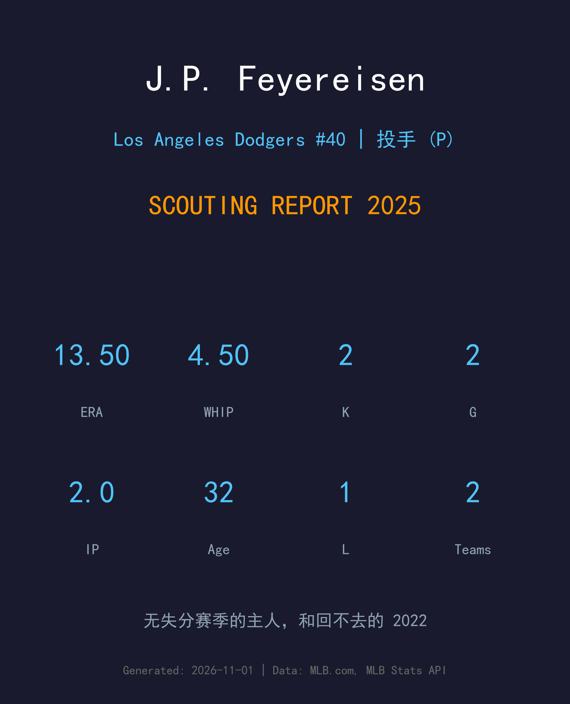
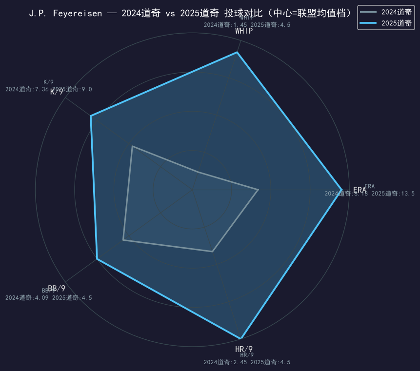
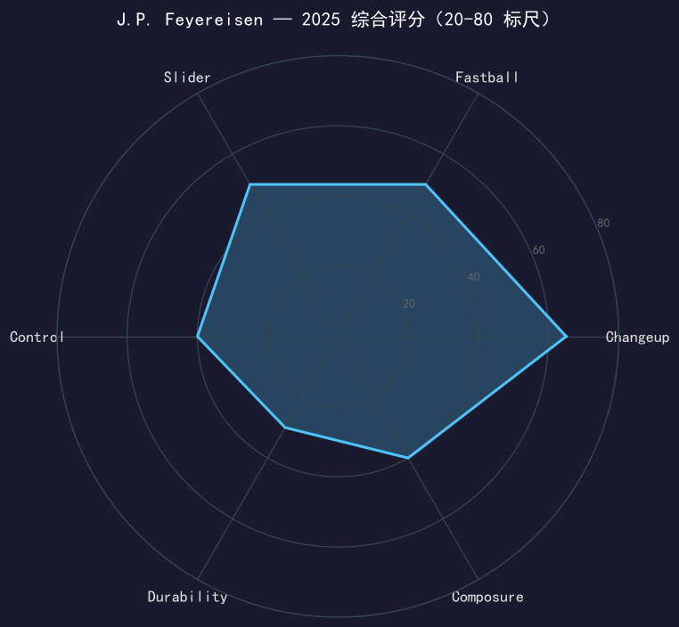

Los Angeles Dodgers #40 | 投手 | 右投 | 无失分赛季的主人，和回不去的 2022

J.P. Feyereisen 的名字在 2025 年 11 月听起来像一句咒语——只要你还记得 2022 年那个数字：24.1 局、0 自责分、0.49 WHIP。那是现代棒球历史上最不可思议的后援赛季之一，而今年他穿着两件球衣合计 4 场、自责分率 13.50 与 9.00，在 5 月 25 日被道奇 DFA、5 月 27 日被 outright 到小联盟，赛季最后的四个月在奥克拉荷马城度过。
道奇段的两场出赛（2 局、8 支安打、4.50 WHIP、被打击率 .615）是崩盘点也是谜题：三振率其实没垮（K/9 9.00），崩的是所有接触管理——36.0 的每九局被安打率意味着每一次被击中都是重击。对一颗曾让全联盟打者束手无策的变速球来说，这不像技能衰退，更像身体（2023 年肩伤手术后的动力链）与信心同时失锚。
从 2025 年 11 月的视角看，32 岁的 Feyereisen 是自由市场上最极端的「高风险高回报」彩票：彩票的正面是 2022 年的 0.00，反面是 2024-2025 合计 12 局的 9.00+。没有球队会给长约，但一定会有球队给春训邀请——因为没有人愿意成为「放弃 2022 版 Feyereisen」的那支球队。
坦帕湾光芒时期投出 22 场 24.1 局、自责分率 0.00、WHIP 0.49、4 胜 0 败——全季零自责分，MLB 后援史上屈指可数的无失分完整赛季。
单季合计 55 场出赛（密尔瓦基 21 场 3.26 + 坦帕湾 34 场 2.45），15 次中继成功 3 次救援，是当年美联最繁忙的后援之一。
响尾蛇 2 场 → 被 waiver → 道奇认领 2 场 → DFA → outright 到 3A，全年没有放弃。11 月 2 日被道奇重新激活，为第六个 MLB 赛季留下火种。
以下为道奇段数据（2025-05-01 自响尾蛇 waiver 认领、2025-05-25 DFA、2025-05-27 outright 至 3A）：

| 赛季 | 球队 | G | ERA | WHIP | IP | SO | BB | HR |
|---|---|---|---|---|---|---|---|---|
| 2021 | MIL+TB | 55 | 2.73 | 1.21 | 56.0 | 53 | 33 | 5 |
| 2022 | TB | 22 | 0.00 | 0.49 | 24.1 | 25 | 5 | 0 |
| 2024 | LAD | 10 | 8.18 | 1.45 | 11.0 | 9 | 5 | 3 |
| 2025 | ARI | 2 | 9.00 | 1.50 | 2.0 | 2 | 0 | 1 |
| 2025 | LAD | 2 | 13.50 | 4.50 | 2.0 | 2 | 1 | 1 |
把五行放在一起，是一条从神话坠回人间的抛物线：2021 的 55 场 → 2022 的 0.00 → 肩伤 → 2024 的 8.18 → 2025 的 13.50。值得注意的是，2025 的 K/9（9.00）甚至高于 2024（7.36）——他的变速球仍然能骗到挥空，问题在于每一颗被击中的球都成了重击（2025 被长打率 .923）。这是「球质未死、控球与进垒点失守」的典型形态，理论上可修，前提是身体先修。
2025 赛季真实配球数据（MLB Stats API pitchArsenal，响尾蛇+道奇汇总）：
全 MLB 最极端的变速球优先配球——四成四的配球率是后援投手中的异类。87 mph 的高变速与速球仅有 4 mph 速差，靠的是出手动作完全一致产生的「同速视觉欺骗」，而非传统落差。
均速 91 的四缝线并不出色，它的价值在于与变速球共享同一挥臂路径——打者分辨两颗球的时间窗不足 0.1 秒。
两好球后的追打选项，2022 年形态下这颗球是「两好球即死刑」的帮凶。
Feyereisen 的 2022 建立在一种精巧的物理现象上：他的变速球与速球速差只有 4 mph，但出手点、挥臂速度、手腕角度几乎完全一致——打者的视觉系统无法在前 30 英尺分辨两颗球，等到看清时球已在好球带里。这种打法对动力链的稳定性要求极高：任何肩部手术的微小后遗症都会破坏挥臂的一致性，而欺骗一消失，91 mph 的速球和 87 mph 的变速球就只是两颗普通的慢球。2024-2025 的崩塌，根子上是这条物理链断了。
他的 2025 年是 roster 经济学的显微镜切片：响尾蛇 2 场后 waiver → 道奇认领（5/1）→ 两次召回两次下放（5/6、5/7、5/13、5/15）→ DFA（5/25）→ outright（5/27）。四个月里他住在奥克拉荷马城，从未再登大联盟。道奇在 11 月 2 日重新激活他——这个动作的含义很明确：不让他在规则五选秀里无保护。球队仍然记得 2022，愿意再付一张彩票钱。
从球探视角，他的「可修复性」其实不差：三振率在线、变速球挥空仍在、没有球速断崖。需要修的是进垒点的精度（2025 每球进垒率仅 .710，道奇段被击球全部又硬又准）和身体链的力量。这类修复在 3A 需要整整一个赛季的耐心——恰好，他的合约形态（小联盟约）允许这种耐心。

彩票正反面都极端的欺骗大师
C 级 / 高风险高回报彩票
道奇 2025 季后赛夺冠之路：外卡 2-0 红人 → NLDS 3-1 费城人 → NLCS 4-0 酿酒人 → 世界大赛 4-3 多伦多蓝鸟。
Feyereisen 没有参与这条夺冠路——5 月 27 日之后，他的赛季就属于奥克拉荷马城的深夜巴士了。道奇的冠军之夜，他大概是全 MLB 最百感交集的人之一：这支球队刚刚激活了他的名字（11/2），而他三年前（2022，光芒）还是全联盟最令人闻风丧胆的 Setup 人选。冠军游行上没有他，但 40 人名单上有他——对一个处在悬崖边的人来说，这已经是最奢侈的圣诞礼物。
Feyereisen 的 2026 年将在 3A 重新开始：一整个赛季的动力链重建、进垒点打磨，以及那颗 44% 变速球的重新校准。如果道奇（或任何得到他的球队）愿意给 40 场 3A 出赛的耐心，彩票的正面仍然印着 0.00。这是典型的「重建资产」剧本——投入极小，回报可能是 2022 年的幽灵。
理想剧本：3A 打磨半年后回到大联盟，成为某支球队的第七局答案
现实基准：整季 3A，waiver 线上的常客
告别可能：若肩膀再出一次问题，0.49 WHIP 的 2022 将成为永久的传说
J.P. Feyereisen 来自威斯康星州的里弗福尔斯，2020 年疫情缩水的赛季里在酿酒人登上大联盟。他的上升速度快得惊人：2021 年已在两支季后赛球队（酿酒人、光芒）合计出赛 55 场，2022 年在坦帕湾投出了那个传说中的赛季——24.1 局、0 自责分、0.49 WHIP、对手打击率不足一成。那一年，他是坦帕湾牛棚里最锋利的一层。
2023 年 6 月，右肩手术让他从这条时间线上消失。再回来时，魔法已经失效：2024 年在道奇 10 场 8.18，2025 年在响尾蛇和道奇合计 4 场 9.00+。从 0.00 到 13.50 只用了三个赛季——这不是「衰退」，是「断层」。
2025 年 11 月的 J.P. Feyereisen 站在职业生涯的悬崖边：身后是 2022 年的 0.00，身前是深不见底的小联盟巴士。道奇在 11 月 2 日激活了他的名字——在全联盟都犹豫的时候，记得魔法的人先伸出了手。对 River Falls 的小伙子来说，这就是他需要的全部：一个还记得 0.00 的人。